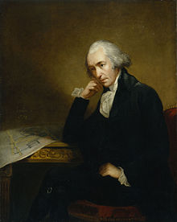

James Watt FRS FRSE (30 January 1736 (19 January
1736 OS) –25 August 1819) was a Scottish inventor, mechanical engineer, and
chemist who improved on Thomas Newcomen's 1712 Newcomen steam engine with his
Watt steam engine in 1781, which was fundamental to the changes brought by the
Industrial Revolution in both his native Great Britain and the rest of the
world.
While working as an instrument maker at the University
of Glasgow, Watt became interested in the technology of steam engines. He
realised that contemporary engine designs wasted a great deal of energy by
repeatedly cooling and reheating the cylinder.
Watt introduced a design
enhancement, the separate condenser, which avoided this waste of energy and
radically improved the power, efficiency, and cost-effectiveness of steam
engines. Eventually he adapted his engine to produce rotary motion, greatly
broadening its use beyond pumping water.
Watt attempted to commercialise his invention, but
experienced great financial difficulties until he entered a partnership with
Matthew Boulton in 1775. The new firm of Boulton and Watt was eventually highly
successful and Watt became a wealthy man. In his retirement, Watt continued to
develop new inventions though none was as significant as his steam engine work.
He died in 1819 aged 83.
He developed the concept of horsepower,and the SI unit
of power, the watt, was named after him.
James Watt was born on 19 January 1736 in Greenock,
Renfrewshire, a seaport on the Firth of Clyde.His father was a shipwright, ship
owner and contractor, and served as the town's chief baillie,while his mother,
Agnes Muirhead, came from a distinguished family and was well educated. Both
were Presbyterians and strong Covenanters.Watt's grandfather, Thomas Watt, was a
mathematics teacher and baillie to the Baron of Cartsburn.Despite being raised
by religious parents, he later on became a deist.
Watt did not attend school regularly; initially he was mostly schooled at home by his mother but later he attended Greenock Grammar School. He exhibited great manual dexterity, engineering skills and an aptitude for mathematics, while Latin and Greek failed to interest him.